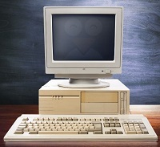

MI PRIMER ENCUENTRO CON LA TECNOLOGÍA
Fue con un computador de mesa que era utilizada por toda mi familia, dependia de una torre que era su centro donde esta guardada toda la informacion mediante un disco que era su centro donde esta guardaba toda la informacion mediante un disco duro que estaba incorporada en esta tendia a relentizarce a menudo al ejercer trabajos que superaban incorporada en esta tendia a relentizarce a menudo al ejercer trabajos que superaban su procesador y capacidades.
Fue abandonado cuando nos mudamos de casa y se perdio uno de los cables que transmitia la electricidad a la pantalla y a la que transmitia la electricidad a la pantalla y el teclado este cable ya no era fabricable, debido a esto se vendido y años despues de que la tecnologia fui testigo como lo computadores de mesa avanzaron volviendo a los computadores de mesa uno de los objetos tecnologicos con mayor potencia de almacenacenamiento y procesador debido a su adaptacion a las necesidades de las personas y a la competencia que les habia dejado atras debido a que progresaron con mayor eficacia en un lapso corto de tiempo.